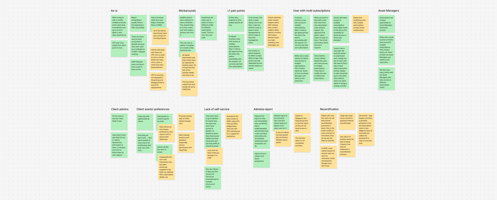
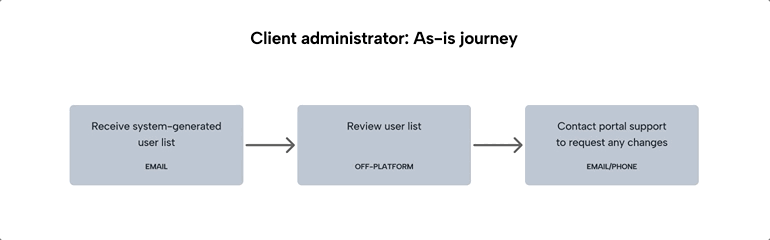
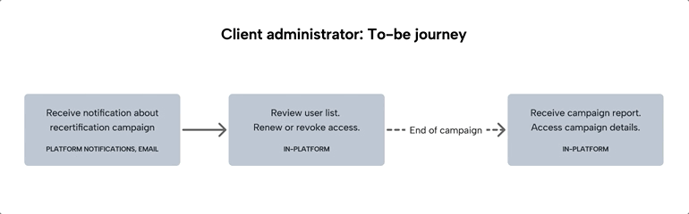
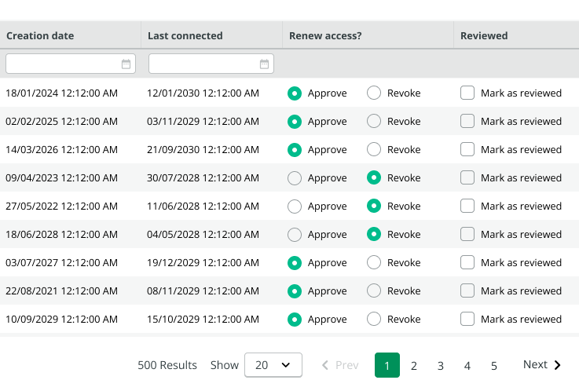
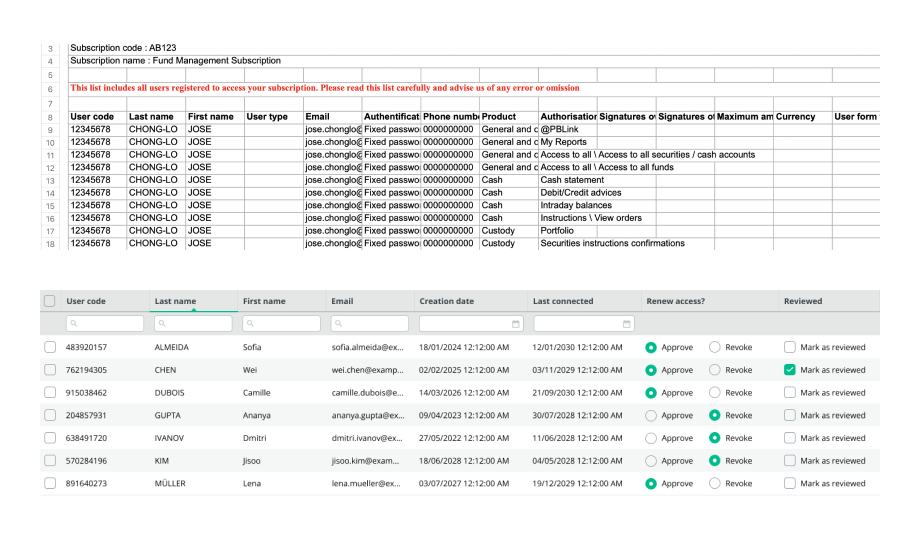
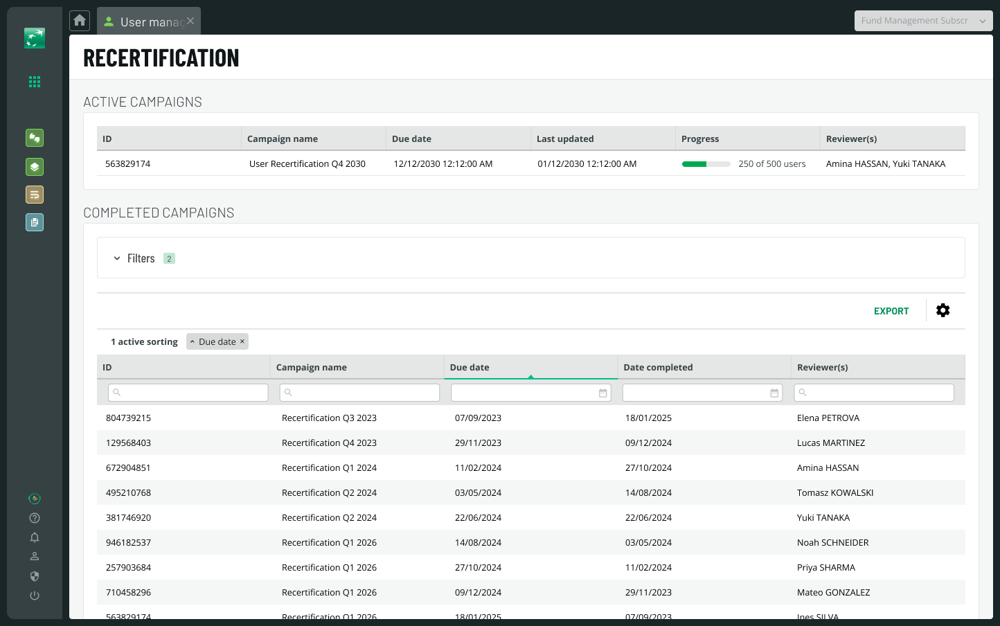

Replacing a manual, email-based user access review with a secure, scalable in-platform workflow for BNP Paribas Securities Services.

Replacing a manual, email-based user access review with a secure, scalable in-platform workflow for BNP Paribas Securities Services.
Background
Neolink is the global client portal of BNP Paribas Securities Services, serving institutional clients including asset managers, banks, and financial institutions.
As UX Lead for Neolink's User Access Management module, I was responsible for a broad programme of work spanning multiple workstreams. This case study focuses on one of the most critical: designing an in-platform recertification workflow to replace a manual, email-based process with significant adoption challenges.
The Problem
Client administrators were responsible for reviewing user access across their subscriptions* to the Neolink portal, but the existing process wasn't set up for self-service. A monthly system-generated report with user list and data that most found too technical to understand, combined with no enforcement mechanism, meant reviews were rarely completed independently.
* A subscription refers to a client's licensed access to specific Neolink services. A client can have multiple subscriptions, each with their own set of users and access levels.
Discovery
To understand the problem from both sides, we conducted interviews across two phases. In Phase 1, we spoke with seven internal stakeholders: Neolink administrators, support staff, and client engagement, to understand how user management worked in practice and where the friction was. In Phase 2, we interviewed five clients to validate our internal findings and understand how they independently approached user access review.
Client administrators didn't always personally know all the users on their subscription, often involving line managers in the review process. Those who did engage with the system-generated report adapted it to fit their own workflows. This told us that the recertification workflow needed to account for how client administrators actually worked in practice, and anticipate what would happen if they didn't complete their review at all.

Synthesizing interview findings across two phases: from internal stakeholders and clients.
Pain Points
There was no way to verify whether client administrators had completed their user access reviews. While the system-generated report met the regulatory requirement, it was impossible to track whether the reviews were acted upon.
Most clients and even some support staff found the system-generated report too technical, limiting the effectiveness of the existing review process and reducing independent completion rates.
Support teams were spending disproportionate time handling user management requests that clients could do themselves, leaving less capacity for more critical issues.
The number of requests is too high, in my opinion. One person per day dedicated to this activity (user management requests) makes no sense.
Sofia, Neolink Support Team
Mapping the Journey
Mapping the recertification journey end-to-end revealed a critical gap in our first version. The flow accounted for client administrators who completed their review , but not for those who didn't. Identifying this early allowed the team to address it before development began.

As-is journey. User access review was done off-platform and not enforced.

Loophole identified in Recertification Journey V1. What would happen if the client review was not completed within the campaign period?
Design Decisions
The recertification workflow was designed to make the review process as guided and accountable as possible: for client administrators who needed to complete it, and for BNP Paribas, who needed to verify it was done.
Renewal and revocation decisions are suggested based on each user's last connection date. If a client administrator doesn't actively review a user, the suggested decision stands at the deadline, closing the loophole identified in the V1 to-be journey. Administrators then explicitly mark each decision as reviewed, ensuring every choice is consciously made rather than passively accepted.
Where the system-generated report could list one user across dozens of rows, the recertification screen shows one row per user, surfacing only the information needed to make a confident approval or revocation decision. Usability testing confirmed clients had enough information to act.
All completed campaigns are stored as a full audit trail, showing when reviews were held, which administrator completed them, and what decisions were made. This gave both client administrators and BNP Paribas a shared record of review history, supporting internal accountability and regulatory compliance.

Suggested decisions and 2-step interaction

Streamlined user list, one row per user

All campaigns, full audit trail
Outcome
The recertification workflow gave BNP Paribas what the system-generated report couldn't. A structured, in-platform process that made it easier for client administrators to review their users and gave the bank visibility into whether reviews were being completed.
All completed campaigns are stored with a full record of who reviewed what and when, giving both BNP Paribas and client administrators a shared history of review activity.
The streamlined one-row-per-user interface replaced the dense, multi-row Admista report. Usability testing confirmed clients had enough information to make confident decisions.
By bringing reviews in-platform with guided suggested decisions, client administrators could complete them independently, reducing reliance on support for routine user management.
I was lucky enough to work with Tiffany on several UX design topics. We interviewed clients together and, by analysing their feedback, she proposed a reviewed experience of creating user access and simplified a much too complex interface. I appreciated the professionalism, the sense of listening, the relevance of the analysis, and the quality of the formalization provided by Tiffany.
Anne-Laure Villanova, Program Manager, BNP Paribas